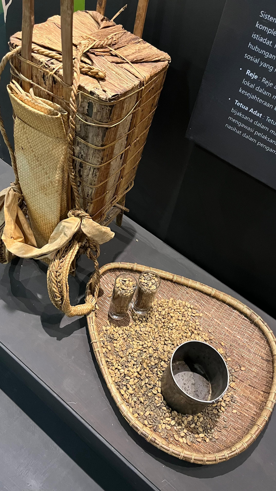

Pertama.

aku mau nulis apa yaa??, tulis aja dehh ini kisah kita, yang awalnya gak kenal sama sekali sampai sekarang gabisa lepas ya, yang dulunya aku cuma bisa liat dalam diam sekarang ya gitu deh, pertama kali kita chatan panjang sampe larut malam banget, dan aku menikmati banget kala itu. se excited itu ya ketika berhasil buat kamu jadi cair. Mungkin aku bukan orang yang lihai dalam mencari topik, aku mungkin kadang ngebosenin, tapi jujur aku pengen setiap detik pengen disamping kamu. Aku berharap kita seperti lagu Batas Senja, yang judulnya "nanti kita seperti ini", aku berharap kita selalu bersama, walaupun mungkin nanti gak selalu mulus jalannya, tapi aku berharap kita selalu baik-baik, tanpa ada pertengkaran diantara kita, kalaupun nanti ada kita selalu bakal bicarain itu baik-baik. Jangan diamin aku, klo aku salah marahin aja, yang jangan diamin aku. Kalo lagi capek bilang aja ya sayang, aku juga bakal ngertiin kamu kok. Asalkan jangan diamin aku tiba-tiba, aku overthinking kalo udah gitu. Cuma sama Syafina Ramadhani aku bisa gini, aku gatau kalo gak ada kamu gimana, aku udah nyaman banget sama kamu, jangan tinggalin aku ya, aku udah naruh harapan aku ke kamu sepenuhnya. Aku paling suka kalo kamu tuh cerita apa-apa sama Aku, jangan sungkan untuk cerita apapun itu ke aku, karena aku pasti akan dengerin semua keluh kesah kamu, aku selalu usahain jadi rumah yang baik untuk kamu, rumah yang buat orang di dalamnnya betah karena kenyamanan, kehangatan, keharmonisan yang diberikan. Aku mungkin ga kayak cowok lain yang bisa ini itu, tapi aku usahain untuk selalu kasih ke kamu yang terbaik dari versi aku. Apapun hal yang kamu gak suka tentang aku bilang aja yaa, aku siap kok dikritik dan diberi saran, karena memang di masa-masa sekarang kita butuh itu, supaya kita bisa upgrading diri kita masing-masing. Segini dulu, nanti di lanjutin dibawah.
Kedua.
Ingat gak foto kedua ini, that's right sayang, mungkin kalo orang lain yang lihat itu cuma foto kopi biasa, tapi bagi kita ada makna tersendiri. Ternyata semakin lama kita mengenal satu sama lain, semakin banyak kesamaan yang kita dapati, emang bener-bener sefrekuensi ya kita, kebanyakan apa yang kita suka dan apa yang kita gak suka. Kita sama-sama suka kopi kan, walaupun berbeda selera kopi kita, aku bisa menyesuaikan selera kopi aku ke selera kopi kamu, tapi kamu gabisa kann??, dan jangan coba-coba ya, kamu mau minum kopi hitam murni, yang ada nanti sakit, kan ayang ada riwayat penyakit lambung. Boleh minum kopi tapi jangan berlebihan, kayak yang udah. Cukup yang kemaren-kemaren ,minum kopi sampe tremor ya sayang, jangan pernah coba-coba lagi, nanti cewek aku sakit. Lihat foto itu aku masih ingat ajakan ayang waktu ke museum, ayang bilang gini, "nanti kita ke museum yaa, biar jadi museum date", aku masih ingat banget ayang ngomong itu. dan itu bener-bener kita lakuin ya. Lunas yang ayang bilang. semakin hari kedekatan kita makin-makin, yang dulunya masih malu-malu, sekarang udah mulai terbiasa. Senyaman itu rasanya ketika bersama orang favorit, baru ngobrol bentar udah jam segini aja, gitu selalu. Itu tandanya kita sama-sama nyaman, sampai-sampai waktu yang udah berjalan dua jam terasa baru setengah jam. Mungkin kita emang gabisa ketemu setiap hari, tapi kita usahain sama-sama pas kita ketemu, kita bakal manfaatin waktu sebaik mungkin, ciptain moment sebaik mungkin. Maaf ya kalo aku kadang terlalu manja, aku berani gitu manja-manja sama ayang karena aku udah percaya banget sama ayang, makanya aku berani ekspresiin sisi lain yang gak orang lain tau. Jujur aku lebih suka gini, hubungan kita tertutup gabanyak orang tau, lebih nyaman aja gitu, tanpa dihantui rasa khawatir bakal dihujat sama siapa gitu. Menurut Ayang gimna??. Kalo dari perspektif aku sih, kalo gini lebih nyaman aja. mungkin kalo kita publik ada aja masalahnya, aku yakin banget pasti ada yang ga beres nantinya, lebih baik kita nikmati aja kayak biasa. Lagian juga orang lain tau gak ada untungnya bagi kita, bukan untungnya bumi masih berputar yahh, itumah lagu bernadya. heheehe.